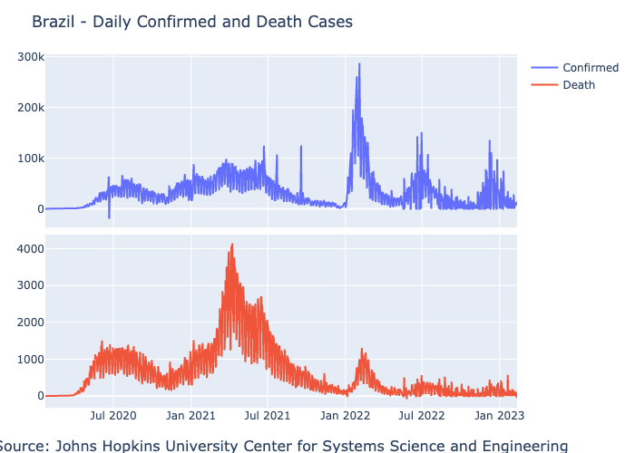

The coronavirus R package provides a tidy format dataset of the 2019 Novel Coronavirus COVID-19 (2019-nCoV) epidemic and the vaccination efforts by country. In addition, the data is available in a CSV format to enable none R users to pull and use it seamlessly.
The goal of this vignette is to demonstrate how to load the data into Julia. In the following example, we will load the coronavirus dataset, a tidy format of the John Hopkins COVID19 dataset, providing a daily summary of the COVID19 cases by type (confirmed, recovered, death), and by country.
The Julia source code can be find here.
For loading the data from the coronavirus Github repository, summarized and plot it we will use the following libraries:
using Pkg, CSV, DataFrames, PlotlyJSWe will use the following packages versions:
Pkg.status() Status `~/Personal/packages/coronavirus/vignettes/covid19_env/Project.toml`
[336ed68f] CSV v0.9.6
[8be319e6] Chain v0.4.8
[a93c6f00] DataFrames v1.2.2
[f0f68f2c] PlotlyJS v0.18.8The .\csv\ folder on the package repository contains the package data in a CSV format. Due to size limitations, each year of data is stored on a separate file under the name coronavirus_ + year. To load all the files, we will use the below for loop to pull the corresponding files from 2020 to 2023. Since the files are being loaded from a URL we will use the download function and load the files with the CSV.File and transform it to a DataFrame with the DataFrame function:
url = "https://raw.githubusercontent.com/RamiKrispin/coronavirus/main/csv/coronavirus_"
df = reduce(vcat, [DataFrame(CSV.File(download(join([url, i, ".csv"])), missingstring= "NA")) for i in [2020:1:2023;]])<Julia object of type DataFrame>
951684×15 DataFrame
Row │ date province country lat long type cases uid iso2 iso3 code3 combined_key population continent_name continent_code
│ Date… String63? String63 Float64? Float64? String15 Int64 Int64? String3? String3? Int64? String63? Float64? String15? String3?
────────┼─────────────────────────────────────────────────────────────────────────────────────────────────────────────────────────────────────────────────────────────────────────
1 │ 2020-01-22 Alberta Canada 53.9333 -116.576 confirmed 0 12401 CA CAN 124 Alberta, Canada 4.41315e6 North America missing
2 │ 2020-01-23 Alberta Canada 53.9333 -116.576 confirmed 0 12401 CA CAN 124 Alberta, Canada 4.41315e6 North America missing
3 │ 2020-01-24 Alberta Canada 53.9333 -116.576 confirmed 0 12401 CA CAN 124 Alberta, Canada 4.41315e6 North America missing
4 │ 2020-01-25 Alberta Canada 53.9333 -116.576 confirmed 0 12401 CA CAN 124 Alberta, Canada 4.41315e6 North America missing
5 │ 2020-01-26 Alberta Canada 53.9333 -116.576 confirmed 0 12401 CA CAN 124 Alberta, Canada 4.41315e6 North America missing
6 │ 2020-01-27 Alberta Canada 53.9333 -116.576 confirmed 0 12401 CA CAN 124 Alberta, Canada 4.41315e6 North America missing
7 │ 2020-01-28 Alberta Canada 53.9333 -116.576 confirmed 0 12401 CA CAN 124 Alberta, Canada 4.41315e6 North America missing
8 │ 2020-01-29 Alberta Canada 53.9333 -116.576 confirmed 0 12401 CA CAN 124 Alberta, Canada 4.41315e6 North America missing
⋮ │ ⋮ ⋮ ⋮ ⋮ ⋮ ⋮ ⋮ ⋮ ⋮ ⋮ ⋮ ⋮ ⋮ ⋮ ⋮
951678 │ 2023-02-05 missing Zimbabwe -19.0154 29.1549 recovery 0 716 ZW ZWE 716 Zimbabwe 1.48629e7 Africa AF
951679 │ 2023-02-06 missing Zimbabwe -19.0154 29.1549 recovery 0 716 ZW ZWE 716 Zimbabwe 1.48629e7 Africa AF
951680 │ 2023-02-07 missing Zimbabwe -19.0154 29.1549 recovery 0 716 ZW ZWE 716 Zimbabwe 1.48629e7 Africa AF
951681 │ 2023-02-08 missing Zimbabwe -19.0154 29.1549 recovery 0 716 ZW ZWE 716 Zimbabwe 1.48629e7 Africa AF
951682 │ 2023-02-09 missing Zimbabwe -19.0154 29.1549 recovery 0 716 ZW ZWE 716 Zimbabwe 1.48629e7 Africa AF
951683 │ 2023-02-10 missing Zimbabwe -19.0154 29.1549 recovery 0 716 ZW ZWE 716 Zimbabwe 1.48629e7 Africa AF
951684 │ 2023-02-11 missing Zimbabwe -19.0154 29.1549 recovery 0 716 ZW ZWE 716 Zimbabwe 1.48629e7 Africa AF
951669 rows omittedNote: similarly, you can load the vaccine data by using the following end point: https://raw.githubusercontent.com/RamiKrispin/coronavirus/master/csv/covid19_vaccine.csv
Let’s review the appended file:
df<Julia object of type DataFrame>
951684×15 DataFrame
Row │ date province country lat long type cases uid iso2 iso3 code3 combined_key population continent_name continent_code
│ Date… String63? String63 Float64? Float64? String15 Int64 Int64? String3? String3? Int64? String63? Float64? String15? String3?
────────┼─────────────────────────────────────────────────────────────────────────────────────────────────────────────────────────────────────────────────────────────────────────
1 │ 2020-01-22 Alberta Canada 53.9333 -116.576 confirmed 0 12401 CA CAN 124 Alberta, Canada 4.41315e6 North America missing
2 │ 2020-01-23 Alberta Canada 53.9333 -116.576 confirmed 0 12401 CA CAN 124 Alberta, Canada 4.41315e6 North America missing
3 │ 2020-01-24 Alberta Canada 53.9333 -116.576 confirmed 0 12401 CA CAN 124 Alberta, Canada 4.41315e6 North America missing
4 │ 2020-01-25 Alberta Canada 53.9333 -116.576 confirmed 0 12401 CA CAN 124 Alberta, Canada 4.41315e6 North America missing
5 │ 2020-01-26 Alberta Canada 53.9333 -116.576 confirmed 0 12401 CA CAN 124 Alberta, Canada 4.41315e6 North America missing
6 │ 2020-01-27 Alberta Canada 53.9333 -116.576 confirmed 0 12401 CA CAN 124 Alberta, Canada 4.41315e6 North America missing
7 │ 2020-01-28 Alberta Canada 53.9333 -116.576 confirmed 0 12401 CA CAN 124 Alberta, Canada 4.41315e6 North America missing
8 │ 2020-01-29 Alberta Canada 53.9333 -116.576 confirmed 0 12401 CA CAN 124 Alberta, Canada 4.41315e6 North America missing
⋮ │ ⋮ ⋮ ⋮ ⋮ ⋮ ⋮ ⋮ ⋮ ⋮ ⋮ ⋮ ⋮ ⋮ ⋮ ⋮
951678 │ 2023-02-05 missing Zimbabwe -19.0154 29.1549 recovery 0 716 ZW ZWE 716 Zimbabwe 1.48629e7 Africa AF
951679 │ 2023-02-06 missing Zimbabwe -19.0154 29.1549 recovery 0 716 ZW ZWE 716 Zimbabwe 1.48629e7 Africa AF
951680 │ 2023-02-07 missing Zimbabwe -19.0154 29.1549 recovery 0 716 ZW ZWE 716 Zimbabwe 1.48629e7 Africa AF
951681 │ 2023-02-08 missing Zimbabwe -19.0154 29.1549 recovery 0 716 ZW ZWE 716 Zimbabwe 1.48629e7 Africa AF
951682 │ 2023-02-09 missing Zimbabwe -19.0154 29.1549 recovery 0 716 ZW ZWE 716 Zimbabwe 1.48629e7 Africa AF
951683 │ 2023-02-10 missing Zimbabwe -19.0154 29.1549 recovery 0 716 ZW ZWE 716 Zimbabwe 1.48629e7 Africa AF
951684 │ 2023-02-11 missing Zimbabwe -19.0154 29.1549 recovery 0 716 ZW ZWE 716 Zimbabwe 1.48629e7 Africa AF
951669 rows omittedWe will use the describe function to review the dataframe attributes:
describe(df) <Julia object of type DataFrame>
15×7 DataFrame
Row │ variable mean min median max nmissing eltype
│ Symbol Union… Any Any Any Int64 Type
─────┼───────────────────────────────────────────────────────────────────────────────────────────────────────
1 │ date 2020-01-22 2021-08-02 2023-02-11 0 Date
2 │ province Alberta Zhejiang 664615 Union{Missing, String63}
3 │ country Afghanistan Zimbabwe 0 String63
4 │ lat 19.2673 -71.9499 20.5937 71.7069 5585 Union{Missing, Float64}
5 │ long 23.84 -178.117 21.7453 178.065 5585 Union{Missing, Float64}
6 │ type confirmed recovery 0 String15
7 │ cases 851.714 -6298082 0.0 1355240 0 Int64
8 │ uid 2840.84 4 531.0 15699 35744 Union{Missing, Int64}
9 │ iso2 AD ZW 49148 Union{Missing, String3}
10 │ iso3 ABW ZWE 45797 Union{Missing, String3}
11 │ code3 375.042 4 336.0 894 45797 Union{Missing, Int64}
12 │ combined_key Afghanistan Zimbabwe 35744 Union{Missing, String63}
13 │ population 2.87888e7 809.0 6.88e6 1.38e9 53616 Union{Missing, Float64}
14 │ continent_name Africa South America 45797 Union{Missing, String15}
15 │ continent_code AF SA 207762 Union{Missing, String3}The dataset has the following fields:
date - The date of the summaryprovince - The province or state, when applicablecountry - The country or region nameLat - Latitude pointLong - Longitude pointtype - The type of case (i.e., confirmed, death)cases - The number of daily cases (corresponding to the case type)uid - Country codeiso2 - Officially assigned country code identifiers with two-letteriso3 - Officially assigned country code identifiers with three-lettercode3 - UN country codecombined_key - Country and province (if applicable)population - Country or province populationcontinent_name - Continent namecontinent_code - Continent codeOnce we load the data, it would be interesting to explore the data using summary tables. In the following examples, we will create a summary of cases (confirmed and death) by country. We will use the chain function to filter the case type, group by country, aggregated by cases, and sort by the number of cases. We will start with a confirmed cases summary:
@chain df begin
filter(:type => ==("confirmed"),_)
groupby([:combined_key, :type])
combine([:cases] .=> sum)
sort!([:cases_sum], rev = true)
end<Julia object of type DataFrame>
279×3 DataFrame
Row │ combined_key type cases_sum
│ String63? String15 Int64
─────┼───────────────────────────────────────────────────────
1 │ US confirmed 102843070
2 │ India confirmed 44685219
3 │ France confirmed 38517125
4 │ Germany confirmed 37907312
5 │ Brazil confirmed 36930339
6 │ Japan confirmed 32957753
7 │ Korea, South confirmed 30350199
8 │ Italy confirmed 25519067
⋮ │ ⋮ ⋮ ⋮
273 │ Qinghai, China confirmed 782
274 │ Diamond Princess confirmed 712
275 │ Holy See confirmed 29
276 │ Grand Princess, Canada confirmed 13
277 │ MS Zaandam confirmed 9
278 │ Channel Islands, United Kingdom confirmed 0
279 │ Diamond Princess, Canada confirmed 0
264 rows omittedSimilarly, we can summarize the total number of death cases by country:
@chain df begin
filter(:type => ==("death"),_)
groupby([:combined_key, :type])
combine([:cases] .=> sum)
sort!([:cases_sum], rev = true)
end<Julia object of type DataFrame>
279×3 DataFrame
Row │ combined_key type cases_sum
│ String63? String15 Int64
─────┼────────────────────────────────────────────────────────
1 │ US death 1114514
2 │ Brazil death 697662
3 │ India death 530750
4 │ Russia death 387560
5 │ Mexico death 332580
6 │ Peru death 219250
7 │ United Kingdom death 214777
8 │ Italy death 187551
⋮ │ ⋮ ⋮ ⋮
273 │ Jiangsu, China death 0
274 │ Ningxia, China death 0
275 │ Qinghai, China death 0
276 │ Saint Helena, Ascension and Tris… death 0
277 │ Tibet, China death 0
278 │ Holy See death 0
279 │ Summer Olympics 2020 death 0
264 rows omittedLast but not least, we will plot the data using PlotlyJS, Plotly version for Julia. In the following example, we will generate a side-by-side plot of Brazil’s total daily confirmed and death cases. We will start by filtering the cases in Brazil by case type - confirmed and death:
df_brazil_confirmed = filter(row -> row.country == "Brazil" && row.type == "confirmed", df)
df_brazil_death = filter(row -> row.country == "Brazil" && row.type == "death", df)<Julia object of type DataFrame>
1117×15 DataFrame
Row │ date province country lat long type cases uid iso2 iso3 code3 combined_key population continent_name continent_code
│ Date… String63? String63 Float64? Float64? String15 Int64 Int64? String3? String3? Int64? String63? Float64? String15? String3?
──────┼────────────────────────────────────────────────────────────────────────────────────────────────────────────────────────────────────────────────────────────────────
1 │ 2020-01-22 missing Brazil -14.235 -51.9253 death 0 76 BR BRA 76 Brazil 2.12559e8 South America SA
2 │ 2020-01-23 missing Brazil -14.235 -51.9253 death 0 76 BR BRA 76 Brazil 2.12559e8 South America SA
3 │ 2020-01-24 missing Brazil -14.235 -51.9253 death 0 76 BR BRA 76 Brazil 2.12559e8 South America SA
4 │ 2020-01-25 missing Brazil -14.235 -51.9253 death 0 76 BR BRA 76 Brazil 2.12559e8 South America SA
5 │ 2020-01-26 missing Brazil -14.235 -51.9253 death 0 76 BR BRA 76 Brazil 2.12559e8 South America SA
6 │ 2020-01-27 missing Brazil -14.235 -51.9253 death 0 76 BR BRA 76 Brazil 2.12559e8 South America SA
7 │ 2020-01-28 missing Brazil -14.235 -51.9253 death 0 76 BR BRA 76 Brazil 2.12559e8 South America SA
8 │ 2020-01-29 missing Brazil -14.235 -51.9253 death 0 76 BR BRA 76 Brazil 2.12559e8 South America SA
⋮ │ ⋮ ⋮ ⋮ ⋮ ⋮ ⋮ ⋮ ⋮ ⋮ ⋮ ⋮ ⋮ ⋮ ⋮ ⋮
1111 │ 2023-02-05 missing Brazil -14.235 -51.9253 death 0 76 BR BRA 76 Brazil 2.12559e8 South America SA
1112 │ 2023-02-06 missing Brazil -14.235 -51.9253 death 74 76 BR BRA 76 Brazil 2.12559e8 South America SA
1113 │ 2023-02-07 missing Brazil -14.235 -51.9253 death 94 76 BR BRA 76 Brazil 2.12559e8 South America SA
1114 │ 2023-02-08 missing Brazil -14.235 -51.9253 death 93 76 BR BRA 76 Brazil 2.12559e8 South America SA
1115 │ 2023-02-09 missing Brazil -14.235 -51.9253 death 37 76 BR BRA 76 Brazil 2.12559e8 South America SA
1116 │ 2023-02-10 missing Brazil -14.235 -51.9253 death -43 76 BR BRA 76 Brazil 2.12559e8 South America SA
1117 │ 2023-02-11 missing Brazil -14.235 -51.9253 death 42 76 BR BRA 76 Brazil 2.12559e8 South America SA
1102 rows omittedTo plot the confirmed and death cases side by side, we will use the make_subplots function to set the grid and add the plots with the add_trach function:
p = make_subplots(rows=2,
cols=1,
shared_xaxes=true,
x_title = "Source: Johns Hopkins University Center for Systems Science and Engineering",
vertical_spacing=0.02)
add_trace!(p, scatter(df_brazil_confirmed,x=:date, y=:cases, name = "Confirmed"), row=1, col=1)
add_trace!(p, scatter(df_brazil_death,x=:date, y=:cases, name = "Death"), row=2, col=1)
relayout!(p, title_text="Brazil - Daily Confirmed and Death Cases")
p
Note: The current markdown format does not support interactive HTML objects. Therefore, the plot out above was saved as a png file and lost its interactivity attributes.